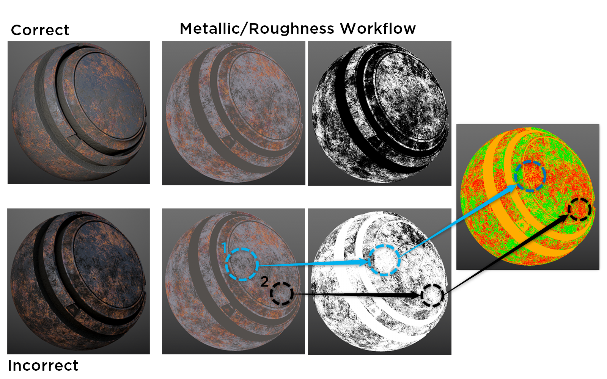

在PBR入门1最后几段中我们简略学习了美术师在PBR中所要设置的几个参数，在这篇中我们将会详细介绍这几个属性的详细workflow，同时也讲述一些美术师在操作时候需要注意的点。
金属/粗糙度工作流程
金属/粗糙度的工作流程通过一组通道定义。这些通道作为纹理提供给着色器的采样器。
在此流程中，金属的反射率值和电解质的颜色都放在基色（basic color）图中，掠射角（入射角接近于90度）的反射处理会由PRDF进行处理。金属度贴图就像一个遮罩，找到金属和非金属的部分，PRDF使用不同的F0对他们进行处理。
关于F0
前面介绍过介电材料的F0一般变化不大，因此我们一般硬编码在着色器中，设置为0.04（4%）。但Substance工具集和UE4中允许更改电介质的F0值。此项输出一般被记为specularLevel,一般范围为0.0-0.08。
基色
基色（basic color）图是一个RGB图。对于非金属材质来说，它记录了该材质的漫反射颜色；对于金属材质来说，他记录的是反射率值。一般来说着色器通过金属值来判断该点记录的是漫反射颜色还是反射率值。
在创建基色图时需要注意的
不同于一般的漫反贴射图，在基色图中，太暗或者太亮的颜色都是不行的。一般我们不会设置0.0或者255.0的值作为基色。
对于很暗的物体，我们一般不设置低于30-50sRGB，对于明亮的物体，我们一般不高于240sRGB。
基色图中一般不包含由环境遮挡造成的光照信息（AO），但是当部分环境遮挡光照细节到AO很难表示的时候，也可以在基色图里添加微阻挡信息，如下图。但是在后续工作流程中，添加的微阻挡信息仍然要和基色图上其他信息一起遵守基色图的亮度范围控制。
根据以上内容做个总结：、
- 金属反射率的值从现实生活中取用。
- 除了微遮挡以外，基色图上不应该有照明信息。
- 基色的暗值不应低于30sRGB-50sRGB
- 基色的亮值不应高于240sRGB值
- 金属的反射率值很高，一般在70%-100%内，我们一般映射到180-255sRGB中。
金属贴图
金属贴图在前篇中也介绍的差不多了，他类似一个灰度贴图。它告诉着色器哪部分是金属（235sRGB-255sRGB），哪部分是非金属(0sRGB)，或者也会有拥有一层薄污垢的金属/金属被氧化/上了油漆的金属，这时候它的取值范围在金属和非金属的取值之间浮动。根据金属度以上特性，我们可以把它想象成一种蒙版。
当金属贴图的值低于235sRGB时，需要降低基色贴图中的反射率值。
下述图表示了使用金属/粗糙度工作流程正确和错误地创建的贴图示例。 污垢在金属贴图中标记为原始金属。 此外，金属反射率值在基色中设置得太低，因为它不反映 70-100% 的镜面反射范围。

粗糙度贴图
粗糙度贴图描述了材质表面的不规则程度（导致漫反射的原因）比较粗糙的面会拥有更大更暗的高光，更光滑的面有更小更亮的高光。
在粗糙度贴图中，0.0代表的是光滑的表面，1.0代表的是粗糙的面。
Resolution and Texel Density（分辨率和纹素密度）
使用金属/粗糙度工作流程的一个副产品是它会产生白边伪影，如图。
这种条纹的产生原因是纹理插值。它在材料的过渡区间内非常明显。
文件的分分辨率和Texel密度和边缘伪影有很大的关联性。
Texel是组成一个纹理的最小信息，Texel密度就是网格上纹理分辨率的密度。Texel密度也称像素比率。一个屏幕像素可以由多个texel来确定，或者一个Texel可以涵盖多个屏幕像素。
Texel密度的单位是（px/cm）如果你希望每平方米（100cm）达到1024像素，Texel密度将为10.24。
回到伪影的产生。比如，如果用硬边笔刷在金属和非金属间创建过渡区域，低分辨率会柔化边缘，加剧伪影。这个低分辨率问题也是由UV未根据文档分辨率进行缩放以提供足够的Texel密度造成的。
上图两个纹理集都使用2048像素分辨率，但是右侧为低Texel密度的劣质UV布局。
为了最大程度上减少伪影的产生，请确保UV提供足够密度以匹配文档分辨率。
金属/粗糙度工作流程的优缺点
优点
- 可以更容易地创作并且更不容易因提供不正确的介电 F0 数据而导致错误。
- 使用较少的纹理内存，因为金属和粗糙度都是灰度贴图。
- 是一种更广泛采用的工作流程。
缺点
- 在地图创建中无法控制电介质的 F0。 但是，大多数实现都有一个镜面反射控制来覆盖 4% 的基础值。
- 边缘伪影更明显，尤其是在较低分辨率下
高光/光泽度工作流程
和金属度/粗糙度工作流程一样，镜面反射/光泽度工作流程也是通过一组贴图进行定义的，镜面反射/光泽度工作流程的贴图是漫反射(diffuse)、镜面反射(specular)和光泽度（glossiness）。尽管substance使用漫反射来命名这个贴图，还是把它理解成反照率（albedo）比较好。同时该workflow里也有和前一个workflow通用的AO、法线、高度贴图。
在该workflow中，金属的反射率值和非金属的F0值放置在高光贴图中。除此之外，您还会拥有两张RGB贴图：一个用于漫反射光（diffuse/Albedo），一个用于反射率值（specular）。
在高光贴图中，可以允许用户自己定义材料的F0值。这就需要用户更加小心注意，防止出现不正确的值从而导致能量不守恒的情况。比如设置了1.0的漫反射和1，0的镜面反射，反射+折射结合起来，甚至高于入射光，违反了能量守恒定律。
漫反射贴图（Diffuse）
和金属/粗糙度工作流程中的basic color相似，但不会包括任何反射率值。
Diffuse贴图中只含有albedo颜色。全金属部分在该贴图上是黑色的（0.0），因为金属没有漫反射颜色，折射的光会被全部吸收，但金属上被氧化污垢的部分不是黑色。对于非金属来说，暗值应不低于30sRGB-50sRGB，亮值不高于240sRGB.
除了微遮挡以外，diffuse贴图上没有照明信息。
高光贴图（Specular）
镜面反射率值定义了金属的反射率值和非金属的F0。该贴图中允许我们修改不同金属和非金属的F0值。由于F0的值是完全由我们自己控制的，所以创造正确的F0值很重要。普通非金属的F0值在2%-5%之间（sRGB :40-75），不能太离谱。
对于找不到IOR值的非金属，我们一般使用4%作为其F0的假设。宝石是非金属中的一个意外，它的F0在5%-17%之间。金属的反射率值是70-100%，（sRGB:180-255sRGB）
由于该贴图中含有非常多材质的F0值，我们可以把该贴图分层，一个材料一层。
光泽度贴图(Glossiness)
光泽度贴图表示了导致漫反射的形状表面的不规则性。和金属/粗糙度工作流程相反，0.0（黑色）代表粗糙，1.0（白色）代表光滑。
解析度（Resolution）和Texel密度
边缘伪影在高光/光泽度流程的影响没有粗糙度/金属度影响的那么明显。
与粗糙度/金属度工作流程不同的是，该工作流程中产生的伪影是黑色的。
高光 光泽度工作流程的优缺点
优点
- 更少的边缘伪影
- 可以在高光贴图中自己控制F0的值、
缺点
- 由于可以自己控制F0的值，不注意就会出现不正确的F0。
- 需要更多的纹理储存空间（有两张RGB贴图）
- 操作难度比金属/粗糙度工作流程更大，需要了解更多的物理知识，比如一般非金属的F0值，能量守恒定律。
两个workflow中通用的一些贴图
法线贴图（Normal）
法线贴图用于模拟表面细节。 它是一个 RGB 贴图，其中每个通道对应于表面法线的 X、Y 和 Z 坐标。 它可用于将高分辨率模型的投影细节存储到低分辨率模型。 在 Substance 工具集中，可以通过烘焙法线或将高度贴图转换为法线贴图。
Ambient Occlusion (AO)
通俗上来说该贴图就是阴影贴图。该贴图表示了一个表面上的点可以拥有多少的环境照明。它只影响漫反射的部分，不会对高光造成影响。
可以把AO贴图想象成硬编码进物体上的阴影部分。
在Substance中，环境光照会乘以AO。AO贴图是一个可选的通道，它不会烘培到问题贴图中，而是通过自己的通道提供给着色器。
Substance中提供从网格烘培/集成烘培工具集从法线贴图转换。也可以从高度输入生成基于水平的环境光遮挡，结果与光线跟踪烘培相似，如下图。
Using the HBAO node in Designer or filter in Painter produces similar results to a raytraced bake
高度贴图（height）
高度贴图可以帮助加深视差、深度。可以为法线贴图和凹凸贴图添加更多明显的深度，提高真实感。Substance使用浮雕贴图视差算法，高度由 PBR 着色器中的纹理采样器提供，也是 PBR 着色器的选项通道输入。、
高度贴图的获得方法有很多，可以和AO一样在Substance中通过集成的烘培工具集和网格中烘培，也可以从法线贴图转换，也可以在SubstancePainter中直接绘制高度细节。
需要注意的是高度贴图应该尽量减少高频细节量，特别是在实时着色器中。高度图应该设计为几何体的整体轮廓。
PBR实用软件
在本节中介绍几个可以帮助PBR纹理设置和反射率设置的实用插件。
Substance Designer
PBR基本材质
该节点可以在Material Filters > PBR Utilities目录下找到，支持金属/粗糙度和高光/光泽度工作流程，为原始金属提供通用预设，为非金属设置反照率（Albedo）。可以控制粗糙度/光泽度/基色等通道。
F0
该节点也在Material Filters > PBR Utilities目录下，可以输出常用的非金属的F0值。该节点拥有一个IOR的输入字段，会计算通过IOA得到的F0。（用于高光/光泽度流程）
金属反射
此节点拥有多种金属的预设，可以输出常见金属原材料的反射率值。在Material Filters > PBR Utilities下找到它。
PBR金属/粗糙度验证
可以在Material Filters>PBR Utilities下该工具与金属/粗糙度工作流程配合使用，可以帮助用户检查基色和金属贴图的错误值。
节点输出一个热力图，红色为不正确的部分，黄色和绿色为正确的部分。
它会检查金属区域（金属值大于等于235的部分）F0值；对于Albedo值，它检查非金属的亮度范围是否正确。
Conversion
该工具将贴图从金属/粗糙度工作流转换为各种渲染，可以在 Material Filters > PBR Utilities下找到。
- Vray (GGX)
- Corona
- Corona 1.6
- Redshift 1.x °
- Arnold 4 (aiSurface) °
- Arnold 4 (aiStandard) °
- Renderman (pxrSurface)
Substance Painter
PBR Metal/Roughness Validate 粗糙度/金属度验证器
与金属/粗糙度工作流程配合使用，可以帮助用户检查基色和金属贴图的错误值。可以从Substance Share中下载。其中红色不正确，黄色与绿色正确。
物质输出和渲染
Substance Source 的 Substance 材质支持金属/粗糙度和镜面反射/光泽度工作流程。这些输出可用于基于物理的实时着色器，例如虚幻引擎 4 和 Unity 中的着色器。基色/金属/粗糙度输出可用于支持金属工作流程的光线追踪渲染器，例如 Arnold。镜面反射/光泽度贴图仅用于实时着色器。根据渲染器的不同，您可以直接使用基色/金属/粗糙度输出，或者您可能需要转换它们。
您从 Substance Share 下载的自定义材料或资源可能没有适合给定渲染器的输出，因为它们主要仅包含基色/金属/粗糙度输出，因此了解您的材料将接受的材料输入类型非常重要，以便您可以如果需要转换，请正确利用 Substance 材质的输出。
例如，使用 Arnold 5，您可以直接使用金属/粗糙度输出。但是，对于 Vray 材质，您需要转换金属/粗糙度输出以生成反射和 1/IOR 贴图。 Substance Painter 支持多种第三方渲染器配置，如下图所示。